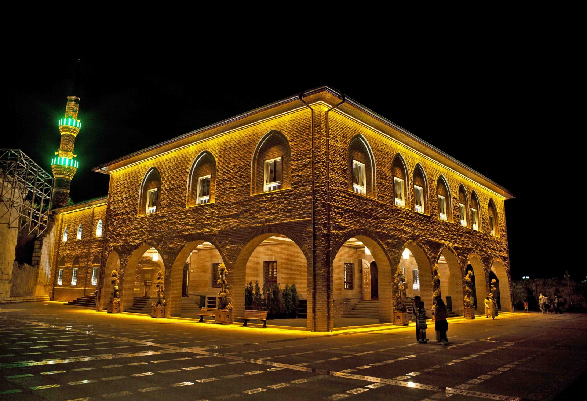
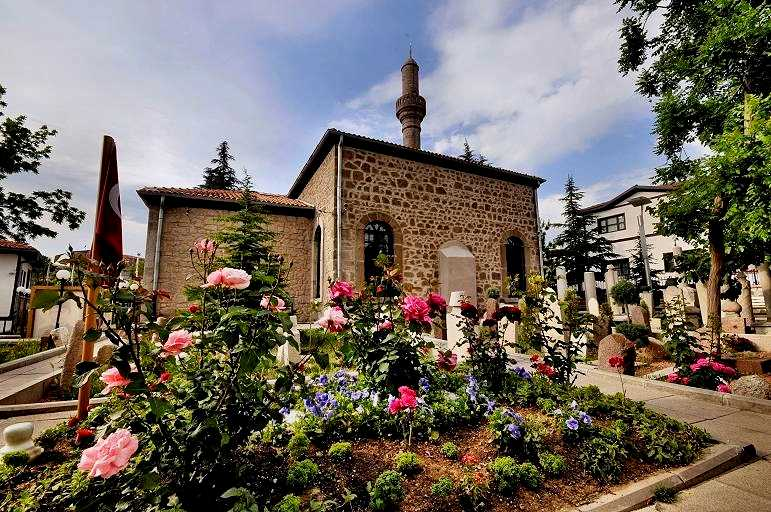
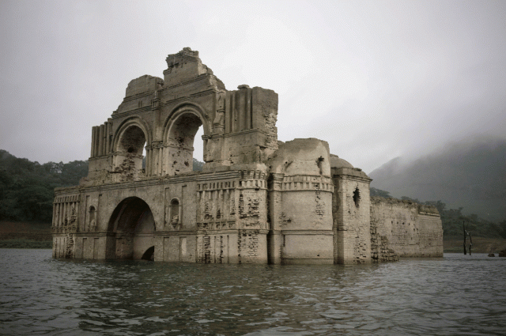

Ankara’daki Dini Yerler

Hacı Bayram Veli Camii
15. yüzyılda inşa edilen bu cami, Ankara'nın manevi sembollerinden biri olup aynı adı taşıyan türbeyle yan yanadır.
Adres: Hacı Bayram Mah., Altındağ/Ankara
Ziyaret Saatleri: Her gün 24 saat açık
Giriş: Ücretsiz

Kocatepe Camii
Modern mimarisiyle Ankara’nın en büyük camisi olan Kocatepe, görkemli yapısı ve merkezi konumuyla dikkat çeker.
Adres: Kocatepe Mah., Çankaya/Ankara
Ziyaret Saatleri: Her gün 24 saat açık
Giriş: Ücretsiz

Tacettin Dergahı
Milli Mücadele döneminin önemli merkezlerinden biri olan bu dergah, Mehmet Akif Ersoy’un da bir dönem yaşadığı yerdir.
Adres: Tacettin Mah., Altındağ/Ankara
Ziyaret Saatleri: Her gün 08:00 – 18:00
Giriş: Ücretsiz

Aziz Clemens Kilisesi Kalıntıları
Erken Hristiyanlık dönemine ait olduğu düşünülen bu yapı kalıntısı, Roma dönemine ait tarihi izler taşır.
Adres: Ulus, Altındağ/Ankara
Ziyaret Saatleri: Açık alan, gün boyu ziyaret edilebilir
Giriş: Ücretsiz